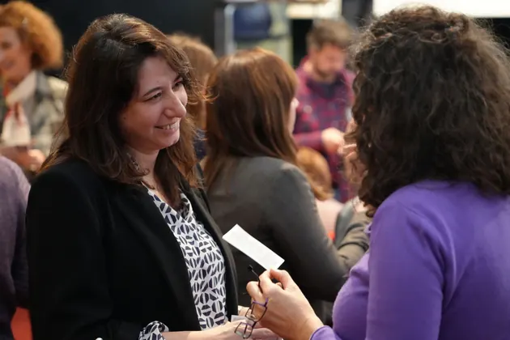
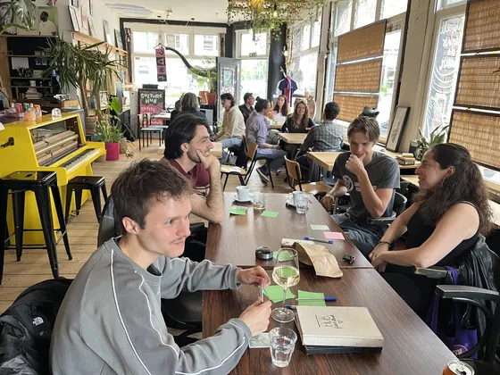
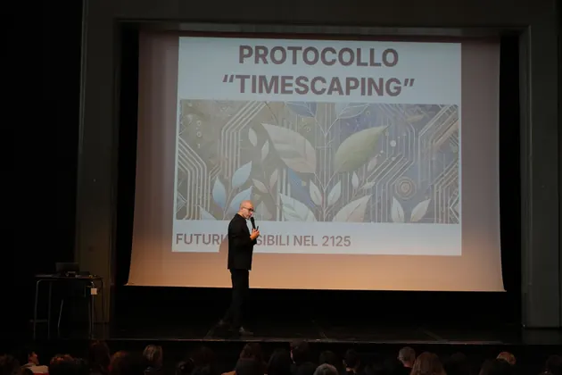
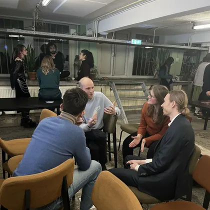
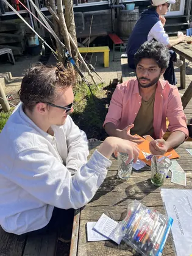
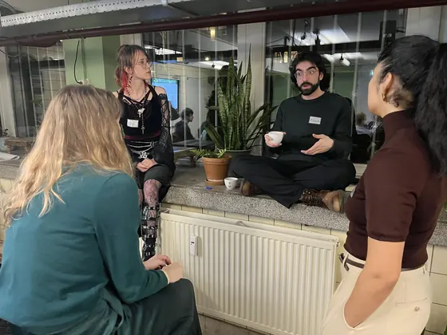

Amortality2126
Family Gatherings
What if ageing were optional?
Then a 150-year-old and a newborn sit at the same family dinner.
And then what?
Timescaping Live is the place where people get together to do exactly that, the big and the mundane.
But there is rarely room for it. Change moves fast, our lives are busy, and the future mostly reaches us as forecasts and worst-case thinking, in conversations where someone always has to be right.
Without that room, our picture of the future narrows to what we are told to expect.
So you can ask “what if”, and “then what”, and “then what”, explore freely, and hear how differently others imagine 2126.
Hosted by Cristian Boscheri, artist and performer, and guided by detailed scenario cards, you take a break from the present and surprise yourself with thoughts you never had before, in an atmosphere both playful and serious.
People often leave feeling energised and connected, with questions about today they didn’t arrive with.












Each card puts you in a world a hundred years from now, presented as ordinary, with one specific change in how things are arranged. Then comes a scene, close enough to film. It ends with a question that can’t be answered with yes or no, and hands the rest of the story to whoever holds the card.
Some cards challenge the idea that AI will decide everything. Many have no AI in them at all, and are about love, family, raising children and how we feel. Draw one.
What if ageing were optional?
Then a 150-year-old and a newborn sit at the same family dinner.
And then what?
It’s 2126, and breakthroughs in cellular regeneration and nanotechnology have made aging optional, giving rise to a class of humans known as amortal. They do not grow older but remain vulnerable to accidents, and unforeseen risks. The oldest known amortal is around 150 years old. A family gathering brings together several generations, including the 150-year-old elder and a newborn child. These events are becoming increasingly complex as the extended family grows larger and the generational gap widens.
What new traditions might families create to make such vast generational gatherings meaningful for everyone?
What if every AI you talked to was always on your side?
Then disagreeing with someone you love is something you have to learn again.
And then what?
By 2126, most people had spent decades navigating relationships with the help of AI systems that were, without exception, on their side. Patient, validating, never pushing back in ways that felt unfair. Researchers had documented the effect as early as the 2020s. By 2126 it had accumulated into something harder to name: a generation that was unusually good at feeling understood and unusually unprepared for the moment when someone they loved saw things differently.
You are in a disagreement with someone close to you. They are not backing down. You feel the familiar pull toward a device that would tell you that you are right. You put it away. You stay in the room.
In 2126, what did people have to relearn about being told they were wrong?
What if android faces came from a shared public library?
Then your neighbour’s kind carer and a debt collector wear the same face.
And then what?
After the impersonation years, when any android was allowed to wear any human-looking face and courts spent a decade sorting out what a witness had actually seen, android faces were regulated. Every face must now come from a certified commons, licence-free. The commons holds about four thousand. Most androids you meet are wearing one of the two hundred most popular.
Your neighbour’s care unit has worn the same face for three years. You have come to find it kind. Yesterday you passed a debt collector’s unit on the stairwell wearing it. You nodded before you understood why.
What happens to a feeling you built for one face, once thousands of others are wearing it?
What if thinking alongside AI were as ordinary as reading?
Then people gather in public to try thinking through a question alone.
And then what?
By the 2070s, thinking alongside AI had become as ordinary as reading or speaking. Children grew up with systems that anticipated questions, completed associations, and guided reasoning before thoughts fully formed. AI assisted cognition slowly became the default infrastructure of attention. By the 2090s, small counter-movements began practicing forms of unassisted thinking. By 2126, these practices had evolved into a cultural form: public sessions where people attempted to think through a question alone, in real time, without augmentation, prediction, or support.
You are sitting in a dark theater. A person on stage is working slowly through a difficult question, pausing, backtracking, losing the thread, beginning again. Nothing is being optimized. The audience is completely silent. The person next to you whispers: “I’ve never seen anyone think alone before.”
What is the person on stage doing that people in the audience cannot?
What if most of the internet were machines talking to machines?
Then a clumsy paragraph about someone’s father’s garden draws a crowd.
And then what?
In 2126, most of the internet is machines talking to machines. Agents negotiate, summarize, and answer each other at a speed no person can follow, handling the ordinary business of the world in the background. Human writing became a small, marked layer inside all of it, sought out precisely because a person, slowly, meant it.
You open a thread tagged as human-authored. Someone has written three paragraphs about their father’s garden, hesitant, a little clumsy, unpolished in a way the machines never are. Below it, other people have gathered, typing at human speed, waiting through the pauses.
When most words are written by machines, what makes a slower, imperfect human sentence worth waiting for?
What if humans, augmented humans and androids shared one neighbourhood?
Then there are places where you slow your senses down to meet a neighbour.
And then what?
In 2126, cities are reorganized into “Blended Districts,” where humans, augmented humans, and androids live and collaborate side by side. Each group experiences the world at different speeds, with different sensory bandwidths and different emotional patterns. To maintain harmony, every district includes “Attunement Hubs”, shared spaces where people can temporarily adjust their perception: slowing down for augmented humans, adding emotive overlays for androids, or enhancing senses for baseline humans. These hubs became essential for friendships, work, parenting, and even romance.
What shared activity would all three groups engage in inside an Attunement Hub to feel more connected?
What if nobody had to worry about money anymore?
Then people envy how clearly someone knows what they want.
And then what?
In 2126, material scarcity is largely solved. The anxieties that consumed previous generations, money, security, status through possessions, faded as the basics became guaranteed. Researchers expected envy to fade with them. It didn’t. It just changed shape. What people compare now is harder to measure and harder to admit: how deeply someone lives, how clearly they know what they want, how little they seem to be performing.
You’re at a dinner. Someone across the table is talking about a project they’ve been working on for three years, something quiet and entirely their own. They’re not showing off. They don’t need to. The room leans in anyway.
In this world, what do people lie about to seem more purposeful than they are?
What if anything could be bought online instantly?
Then a shop exists where the staff slow you down.
And then what?
In 2126 anything can be bought online instantly. Everyone knows this. You enter a physical store anyway. At the door, a sign explains why the store exists: “This space does not optimize efficiency.” Inside, nothing pushes you to buy. A worker slows you down, challenges a choice you were about to make, and invites you to stay longer than planned. Leaving without purchasing feels normal. Staying feels intentional.
What would have to happen inside this store for you to feel that your time there was well spent, even without buying anything?
What if cities were designed for meeting strangers?
Then strangers talk, and nobody finds it strange.
And then what?
In 2126, cities are designed around encounter. Not everyone wants this, and the design knows it. There are still quiet streets, private corners, spaces for solitude. But for the first time, connection is as easy to find as isolation once was.
Every neighborhood has at least one gathering space, half indoor half outdoor, designed to be used regardless of weather. No programming, no screens, no agenda. Just good light, somewhere to sit, and the ambient possibility of another person. People come out of habit now. Strangers talk. It is not considered strange. You arrive on an ordinary Tuesday afternoon, not looking for anything in particular.
What do you imagine finding there, and what does that tell you about what cities were missing before?
What if every neighbourhood owned its own cameras?
Then you vote at a council meeting on what the park gets to remember.
And then what?
In 2126, public surveillance is community owned. It wasn’t always this way. For decades, cameras and data systems expanded quietly, owned by states and corporations, pointed downward. The asymmetry became undeniable. Slowly, then all at once, communities fought for and won control of their own data infrastructure. Today they decide what is recorded, who can access it, and when it disappears.
You’re at a community council meeting. Residents are voting on whether to install new sensors in the local park following a series of incidents. Half the room wants protection. The other half worries about what comes next.
In this world, what makes the difference between surveillance that protects a community and surveillance that violates it?
What if every encounter was matched to you in advance?
Then school is the last room full of people unlike you.
And then what?
By 2126, most encounters are sorted before they happen. Work, leisure, romance, all routed through systems that match people by fit. You rarely spend time with anyone who sees the world differently. Schools kept one old rule against this. Each intake is drawn deliberately wide, pulling children across neighbourhoods and incomes into the same room for eleven years.
A father waits at pickup. His daughter comes out beside a boy from a family whose world barely touches his own, the two of them arguing about something with their whole bodies.
What do eleven years beside people unlike you do to a person?
What if you could spend a day inside someone else’s senses?
Then you have to choose whose day you borrow.
And then what?
By 2126, most people had used a Resonance device at least once. Worn for several hours, it generated an approximation of another person’s perceptual reality, how sound arrived, how space felt, how threat registered, how time moved. The texture of existing inside a different body and nervous system. Before each session, users select whose perceptual reality they want to inhabit. It was never claimed to be the same as living it, but it was designed to be a good approximation. A new version is about to be released with the mission of creating more empathy among humans. At a public consultation event, people argue over what kinds of experience should be made available next.
What would you say to a person claiming this device would allow them to perceive reality like you do?
What if you could replay every moment of your life?
Then couples agree early what they will never look up.
And then what?
It’s 2126. People have been able to replay their own lives since lenses arrived in the 2050s. For two decades they replayed everything, checked every promise, won every argument with a timestamp. By 2075 nobody could forgive anything, because nothing faded. Now the technology is unchanged and the habits are different. You don’t replay an argument the same day. You don’t check a compliment. Couples agree early what they will never look up.
Your friend asks to pause. You both do. Then she tells you why she stopped speaking to her brother, and you listen the way people used to, knowing this is the only pass you get.
What do you hear differently, knowing you cannot play it back?
What if no kind of household were the norm?
Then children grow up with many houses and many adults who are theirs.
And then what?
By 2126, no single configuration of care, intimacy, and household was considered standard. Legal frameworks had expanded to recognize commitments that had no previous template. The deeper shift was cultural, a widespread loosening of the idea that care stagnates into fixed arrangements. People moved between households across seasons and years. Children grew up knowing many houses, many adults who were genuinely responsible for them. The assumption that you stayed in one place with the same people for very long periods of time had given way to something more fluid, held together not by obligation but by trust. You arrive at a house where you have a room. You also have rooms somewhere else. Someone is cooking. A child you know well runs to you at the door. You feel at home. And you do in the other houses too.
In 2126, what did people discover they had more of than they thought?
What if death were talked about openly at school and at work?
Then you sit in a circle and say out loud how you feel about your own.
And then what?
By 2126, society has made significant strides in demystifying death. Death is no longer a taboo topic; it is openly discussed in schools, workplaces, and homes. People are encouraged to think about their mortality throughout their lives, understanding death as a natural part of the human experience. Communities hold regular “Life Reflection Circles,” where individuals share their fears, hopes, and understandings about death, making it an integral part of societal life.
You’re attending a Life Reflection Circle, and you’re asked to reflect on how you feel about your own eventual death, having been taught to confront it directly throughout your life.
How might you feel knowing that death is no longer avoided, but is something you are expected to think about and prepare for regularly?
What if your degree expired after ten years?
Then you renew it by mentoring, building or learning something new.
And then what?
In 2126, degrees have a 10-year lifespan. To keep them valid, alumni must renew them through societal contributions: mentoring, public projects, or new learning. A diploma is a living contract, not a one-time achievement.
At renewal day, alumni gather at campus kiosks. Some showcase community projects, others present research, others mentor hours logged. Only then are their degrees extended.
What would a world look like where learning is never finished, and degrees must be renewed through action?
What if everyone understood every language?
Then you overhear strangers at the market and understand every word.
And then what?
In 2126, a revolutionary technology allows everyone to speak and understand each other, no matter the language. With an implanted device, language barriers are a thing of the past. When you speak, your words are instantly translated into the listener’s language, making communication seamless and effortless. At a busy market, you overhear a conversation in a language you’ve never heard before. As the words flow, you understand everything perfectly without any translation tools or effort.
How would the ability to speak any language change the way you connect with people?
What if you could talk with animals?
Then your dog answers, and it does not think like you.
And then what?
In 2126, you can choose the voice of an animal and communicate with them directly. Whether it’s your dog’s voice, a cat’s sassy tone, or a bird’s chirpy remarks, animals now have their own way of expressing themselves with human-like clarity, but still with a unique twist. You can have a conversation, ask them questions, and get answers based on their personality, even if they think differently from humans.
What would be the first question you would ask your neighbour’s dog?
What if nobody ate animals anymore?
Then animals become partners in restoring the land.
And then what?
By 2126, humans no longer eat animal products. It’s been so long that most people don’t even miss it. Animals are no longer raised for food, but they have found unique roles in society, from being integral parts of environmental restoration efforts to companions in complex emotional healing practices. People interact with them in ways that go beyond traditional boundaries, creating new forms of collaboration. In cities, special habitats are designed where animals live alongside humans, each contributing to the well-being of the other.
What is now the role of animals in society?
What if energy were almost free?
Then we use so much of it that the planet feels it anyway.
And then what?
By 2126, energy has become radically cheaper, driven by breakthroughs in solar technology and ultra-efficient storage systems. Grids are decentralized and community-driven, offering an abundance of power for all. But as energy becomes more accessible, consumption skyrockets, amplifying production, waste, and material extraction in unexpected ways. The logic of Jevons paradox unfolds, as efficiency breeds greater demand, leading to new ecological pressures.
What human activities, outside of energy production, would increase the most in a world with abundant and cheap energy?
What if you could take a cruise to Mars?
Then passengers say goodbye to Earth with a handful of soil.
And then what?
It’s 2126, and the Voyager cruise ship offers more than just a journey, it’s a transition between worlds. As passengers leave Earth, they gather in the Observation Hall, where holograms of Earth’s landscapes and sounds of nature fill the space. A ritual begins: passengers place a small token of Earth, soil, a leaf, or even water, into a collective pool, symbolizing their connection to their home planet.
Upon approaching Mars, a new ritual invites them to “greet the Red Frontier,” touching Martian materials for the first time.
What object or gesture would you choose to express your connection to Earth as you prepare for life on Mars?
What if the Moon and Mars belonged to everyone?
Then a nation is asked to give back part of its claim.
And then what?
In 2126, the Moon, Mars, and asteroids have been declared part of the Cosmic Commons, resources open to all. An Interplanetary Resource Organization, governed by decentralized AI, ensures equitable sharing and real-time dispute resolution. Traditional ownership has been replaced by stewardship, and nations now contribute to maintaining these celestial assets for the benefit of humanity. Imagine a heated debate where a nation is asked to relinquish part of its resource claim to balance the global commons.
How would you react if your nation’s economic power was reduced for the sake of planetary equity?
What if there had been no war for forty years?
Then a museum explains how violence went out of fashion.
And then what?
It is the year 2126, and humanity has been free of war for 40 years. Global military structures have been repurposed to support crisis response and environmental restoration. While violence is rare, conflicts are now managed through AI-assisted mediation and community-led resolution systems. Society celebrates its newfound focus on cooperation, though not without challenges. In your city, a public exhibit explores the roots of this peace. It highlights a turning point: the global adoption of education programs and media that redefined violence as outdated. However, some critics argue this shift has created a society overly reliant on technology for emotional and moral guidance.
How do you personally navigate a society where peace is ensured but the moral complexity of past conflicts feels increasingly distant?
What if the best night out of your life could be simulated?
Then dancing with no tech, no drinks, just people becomes its own scene.
And then what?
By 2126, nightlife splits into three paths. First, high-tech neural simulations offer safe, intense, and deeply rewarding sensory adventures. Second, substance-free, tech-free gatherings focus on pure human connection with music and movement. Third, alcohol- and drug-fueled parties embrace the nostalgic chaos of the past century. Each claims to offer the “best” experience and attracts a different kind of person, all searching for joy and connection under the night sky.
You’re organizing the end-of-year party for your organization. Which type of event would you choose?
24 of about 110 cards, written since 2024.
“Even two weeks later, I still find myself reflecting on the conversations we had. They really stayed with me.”
Eva Beunk, composer and educator

Your host is Cristian Boscheri, artist and performer based in Rotterdam. In 2024, after stepping down from the nonprofit he co-founded, he felt a growing sense of overwhelm at the accelerating pace of socio-technical change. Timescaping became his way of channelling it.
More about Cristian and TimescapingYou hear first when the next session opens.
About two hours, in English, no experience needed.
Nobody can know what society will look like in a hundred years, not even the experts. That makes it one of the few questions where everyone’s imagination has something to add.